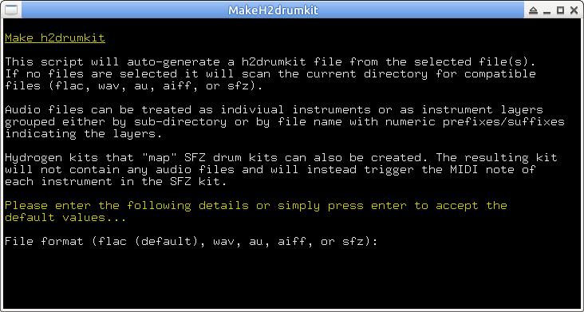

Running makeh2kit with no arguments will scan the current directory for FLAC files and create a h2drumkit file named after the current directory. Instruments are named after the audio files minus their extension.
Audio files can be treated as indiviual instruments or as instrument layers grouped either by sub-directory or by file name with numeric prefixes/suffixes indicating the layers. For example, if the "layer marker" is set to "prefix":
00 kick1.flac
01 kick1.flac
02 kick1.flac
03 kick1.flac
become layers of kick1, and
1_kick2.flac
2_kick2.flac
3_kick2.flac
4_kick2.flac
become layers of kick2.
Hydrogen kits that "map" SFZ drum kits can also be created. The resulting kit won't contain any audio files and will instead trigger the MIDI note of each instrument in the SFZ kit. Once the kit is imported, connect Hydrogen's MIDI Out to the sampler's MIDI In.
File format (FLAC, WAV, AU, AIFF, or SFZ) can be specified using the -f option:
makeh2kit -f wav
The drum kit name, author, license, and info can also be entered on the command line. When supplying arguments to these options use single rather than double quotes to allow for use of special characters. In addition, HTML formatting tags may be entered when passing an argument to the info option:
makeh2kit -i '<p><b>Kit Name</b></p><p>Kit description</p>'
Options to reverse the sort order and to run the script in "interactive mode" are also available. To see the full list of options:
makeh2kit -h
For convenience of use, place the script in a directory included in the PATH environment variable (e.g. /usr/bin, /usr/local/bin).
makeh2kit requires bash v4 and gnu awk
Make h2drumkit
This is a Nautilus script to invoke makeh2kit. Any selected files will be passed as arguments to makeh2kit. The script assumes that makeh2kit is installed in a directory included in the PATH environment variable (e.g. /usr/bin, /usr/local/bin) and that xterm is available.
Near the top of the script are variables that may be modified if you need to specify the file path of makeh2kit or if you wish to use a terminal emulator other than xterm:
MAKEH2KIT_PATH="makeh2kit"
TERMINAL_COMMAND="xterm -hold -title MakeH2drumkit -font 9x15 -e"
Place the script in the Nautilus scripts directory, e.g. '~/.gnome2/nautilus-scripts'. If Nautilus Scripts Manager is installed, place the script in '/usr/share/nautilus-scripts'.
h2drumkit.desktop
KDE service menu .desktop file to invoke h2drumkit. It assumes that h2drumkit is installed in a directory included in the PATH environment variable (e.g. /usr/bin, /usr/local/bin).
Place the .desktop file in one of the service menu directories, e.g. '/usr/share/services/ServiceMenus'.
You can find the location of all service directories like so:
kde4-config --path services